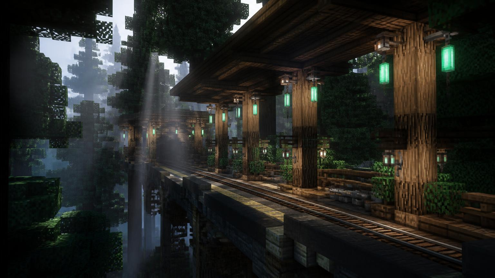

М3 · Смарагдова
М3 · Смарагдова
Соснова Верхівка
Наземна крита станція смарагдової лінії, район «Шахтарський квартал». Відкрита 05.02.2024, кінцева станція лінії.

Характеристики
Лінія
М3 · Смарагдова
Дата відкриття
05.02.2024
Тип станції
наземна
Глибина
26 блоків
Довжина платформи
130 блоків
Платформ
2
Колій
2
Район
Шахтарський квартал
Координати
X: -643, Y: 42, Z: 430
Пасажирів на добу
538
Опис
Станція «Соснова Верхівка» розташована в районі «Шахтарський квартал» та обслуговує потяги смарагдової лінії. Вестибюль виходить до головної вулиці району, а платформа завглибшки 26 блоків з'єднана з поверхнею двома сходовими маршами.
Архітектура
Основна риса оформлення — панорамне скління з тонованого скла та каркас із залізних блоків. Освітлення виконане у теплому спектрі, а покажчики зібрані у єдиному стилі мережі.
Цікаві факти
- Це єдина станція мережі, де ескалатори повністю зібрані з 570 мідних блоків.
- У стіни вмонтовано 908 світлокам'яних панелей — рівень освітлення тут завжди 15.
- Під платформою збереглася технічна вагонетка часів 564 року.
Поруч зі станцією
- Стадіон PvP
- Ферма заліза
- Смарагдовий сквер
- Ринок Emerald Market
Історія станції
Як будували «Соснова Верхівка»
-
Початок будівництва
Стартувало виймання породи та зведення тимчасових опор тунелю.
-
Стикування тунелів
Прохідницькі бригади з'єднали два перегони під землею.
-
Відкриття для пасажирів
Перший потяг прийняв пасажирів о 09:00 за серверним часом.
-
Реконструкція вестибюля
Замінено освітлення та оновлено навігаційні таблички.
Фотогалерея